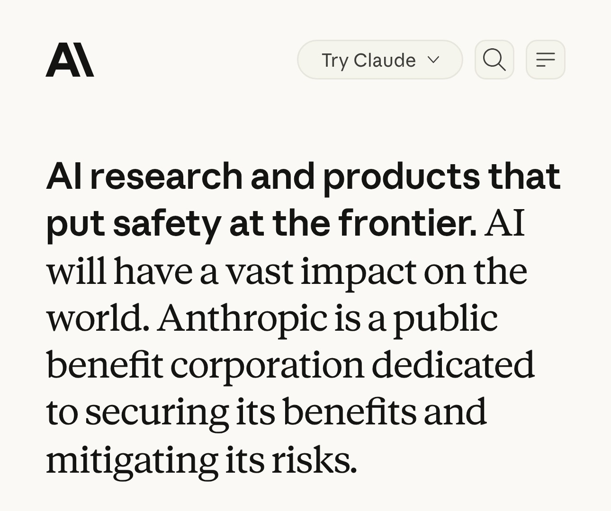

PLEIN ÉCRAN · FILTRE BLEUTÉ
Anthropic entre
en Bourse
c'est officiel.
CAPTURE D'ÉCRAN · FOND BLANC
Le créateur de Claude

anthropic.com
l'entreprise qui a créé Claude
CHIFFRE · FOND BLANC
Valorisation visée
2 000
milliards de dollars
Source : presse, octobre 2026FinanceData
BARRES · VRAIS LOGOS
Anthropic coûte quatre fois plus cher que les géants
Prix ÷ chiffre d'affaires annuel, octobre 2026
Source : CompaniesmarketcapFinanceData
PHOTO CENTRÉE · HD
Le patron d'Anthropic

Dario Amodei · Photo TechCrunch, CC BY 2.0
BLOCS · FOND BLANC
Deux clients font un quart des ventes
Part du chiffre d'affaires, 1er semestre 2026
Source : prospectus S-1FinanceData
POSITIF / NÉGATIF
Rentable sur l'activité, en perte sur le papier
Résultats d'Anthropic, en milliards de dollars
Sources : S-1 ; presse (activité T2, estimée)FinanceData
PLEIN ÉCRAN · FOCAL + BLEUTÉ
Et ses profits ?
ce qu'elle gagne
CTA

FinanceData
S'abonner